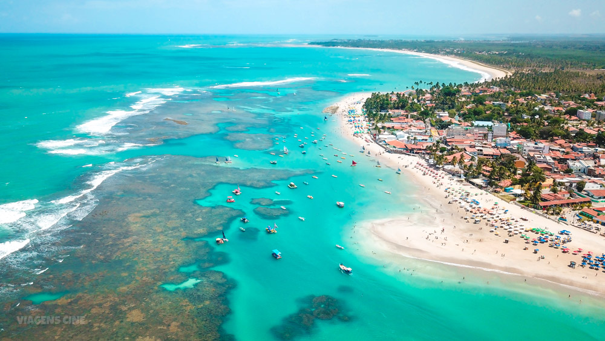

Descobrindo as praias do Nordeste
O Nordeste do Brasil é conhecido por suas praias paradisíacas, com águas cristalinas e areias brancas. Neste artigo, vamos explorar algumas das melhores praias da região, como Jericoacoara, Praia do Forte e Porto de Galinhas. Prepare-se para se encantar com a beleza natural e a cultura vibrante dessas praias incríveis!
Além das praias, o Nordeste também oferece uma rica gastronomia, com pratos típicos como acarajé, moqueca e tapioca. Não deixe de experimentar essas delícias durante sua visita. E para os amantes de aventura, há opções de esportes aquáticos, como kitesurf e mergulho, que proporcionam experiências inesquecíveis.
